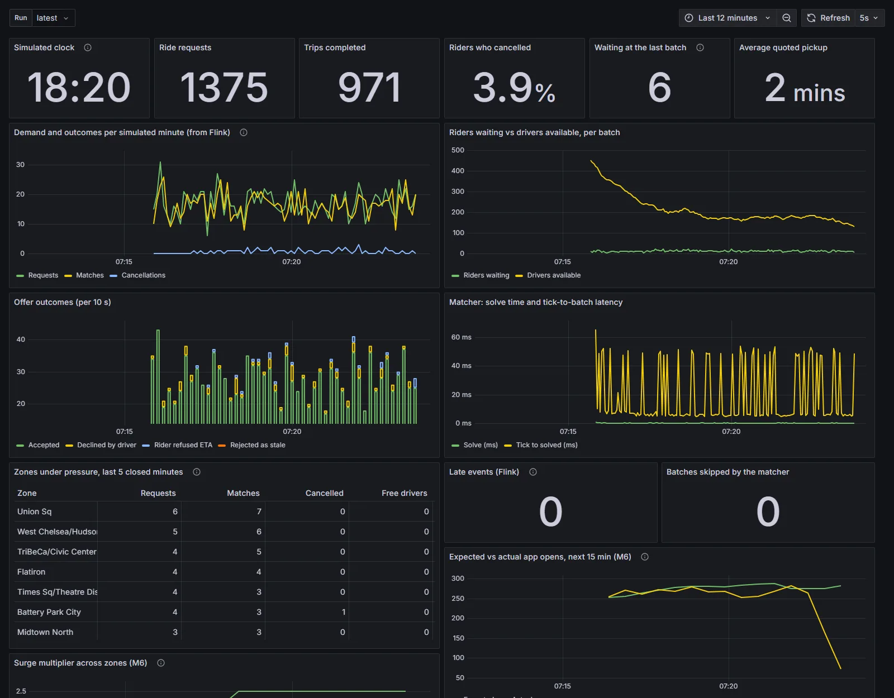

Key takeaways
- Waiting 30 seconds and matching riders to drivers as a batch, instead of sending the nearest driver at once, serves +7.5% more trips when drivers are scarce. The gain follows scarcity almost exactly.
- An honest pickup estimate matters as much as the matching. A learned ETA adds +8.3% trips once riders cancel on late drivers.
- Surge pricing only helps if it brings more drivers online. With a fixed fleet it just prices riders out (−4.3%).
- Every result holds on all 19 Wednesday evenings of four test months across a year. Each was a paired comparison over seeded runs, never a single run.
- The live system, run with zero latency, reproduces the offline simulator bit for bit, so what it measures offline is what it runs live.
The problem: the nearest driver is a short-sighted rule
When you ask for a car, the platform has a few seconds to choose a driver while new requests and driver positions keep arriving. The obvious rule is to send the nearest free driver the moment the request comes in. It is simple, it feels fair, and it is short-sighted.
It can spend the only driver near one rider on another rider who had other options. When drivers are scarce, a freed driver goes to whoever has waited longest, however far away that is, which means long pickups. And riders cancel when they see a long quoted wait, or when the driver they were promised is late. Every one of those bad decisions costs something you can measure: minutes of waiting, trips that never happen, and drivers driving empty.
Nearest driver vs a batch, in slow motion
Two riders, two drivers, one avenue. Minutes are driving time.
Sending the nearest driver at once looks best for rider 1 and leaves rider 2 a 7-minute wait, so they cancel. Matching both together costs rider 1 three extra minutes and serves both. That trade, made thousands of times an evening, is what batching buys.
Matching is not the only question. How long will the pickup really take? Where will demand be in 15 minutes? Should prices rise? Where should an idle driver wait? A real platform answers all of them over streams of events that arrive late and out of order, from services that restart, and the numbers still have to add up.
What RideSync does
RideSync is a complete dispatch system built to test those ideas against each other, on real New York demand, with the negative results reported next to the positive ones.
Batch, then solve the batch optimally
Requests are collected for a few seconds. Each batch becomes a minimum-cost bipartite matching between waiting riders and available drivers, solved with the Hungarian algorithm (written from scratch, and checked against SciPy and brute force). Drivers who will finish their current trip within two minutes count as supply too.
A cost that counts what riders do
The cost of a pairing is not just distance. It covers the pickup time, how likely this rider is to cancel at that wait, and how long they have already waited, so nobody is starved. A match, once made, is never revisited.
Models where they earn their place
A demand forecast per taxi zone every 15 minutes, a learned correction to road-network travel times with an 80% range, a fare model, a surge-pricing policy with simulated price sensitivity, and a planner that moves idle drivers toward where demand is expected.
How it is built
There are two modes and one matcher. The offline mode is a seeded discrete-event simulator that runs a three-hour evening in about a second, so every idea can be tested on many days and seeds. The live mode runs the same world as a service, paced to the wall clock, talking to a separate matcher service over Kafka.
The live system
The simulator is the world and has the final word; the matcher proposes. Blue lines are Kafka topics; the dashed violet line is the repositioning plan added in the last milestone.
Why the matcher waits for the slowest partition
Each Kafka partition carries the simulator's clock ticks. The matcher solves the 30 s batch only when every partition has passed 30 s.
If the matcher fired as soon as the fast partitions reached 30 s, a rider whose request was still in flight on partition 2 would be missing from the batch. Waiting for the minimum is what makes the live results identical to offline.
Three design choices keep the live system honest.
- Event time, not wall time. The simulator writes a "tick" to every partition of the world topics. The matcher's watermark is the oldest of them, because Kafka only keeps order within a partition. A batch fires only when every event up to its boundary has been read, so results don't depend on how fast the replay runs.
- The world decides, the platform proposes. An offer for a rider who already left, or a driver who is no longer free, is rejected with a reason. Offers and moves carry ids, so a message delivered twice does nothing.
- Proof that going live loses nothing. A lockstep runner puts both services on an in-memory bus with zero latency. Its results are identical to the offline simulator, bit for bit, with 1 or 3 partitions and with messages delivered out of order. Any difference in a real Kafka run therefore comes from latency alone.
Real New York, not a toy city
Riders are replayed from the NYC Taxi & Limousine Commission's records of every Uber and Lyft trip in Manhattan. Drives follow the road network, with times fitted to real trip durations. The data runs from January 2024 to July 2026: 31 monthly files of about half a gigabyte each, reduced to 8 MB per month on a laptop.
Recency matters. New York started congestion pricing in January 2025, which changed traffic and fares in the very area simulated: July 2026 traffic is 8% slower than March 2024, and the new fee is charged on 81% of Manhattan trips. So the models train on the months since, and every test day comes after its training data.
What it found
Every number below is a paired comparison: the same riders, the same driver decisions and the same random draws under each policy, over six seeds. That isolates the policy from the luck of the day. The latest round went further and ran every experiment on every Wednesday evening of October 2025 and January, April and July 2026, treating days as the units, so the intervals include ordinary day-to-day variation.
Six effects, 19 Wednesday evenings
Change in trips served per hour against each baseline, % · dot: mean over days · thick bar: 95% interval · thin line: lowest to highest day
Table view
Batching pays exactly when drivers are scarce
With 300 drivers on a Manhattan evening, batching for 30 seconds with the cancellation-aware cost serves 7.5% more trips. With 500 drivers the gain all but disappears, because when drivers are plentiful the nearest one is usually the right one. The size of the gain varies from +2.6% to +13.2% between ordinary Wednesdays, and the chart below shows why: it follows how short of drivers that evening was almost exactly.
The scarcer the evening, the more batching helps
Each dot is one Wednesday evening, 300 drivers · x: share of riders who cancel under instant dispatch · y: extra trips/h from batching, % · correlation 0.97
Table view
At the full scale of the city the optimal solver itself starts to matter. Batches then hold 100 to 325 riders, greedy matching is worse in nearly nine batches out of ten, and the Hungarian solve adds about 250 trips an hour at 4,000 drivers. At a 10% sample it barely beats greedy, a reminder that a result measured on a small model of a system can flip at full size.
An honest ETA is worth as much as clever matching
If riders only cancelled on long quotes, an optimistic ETA would look free. Once they also give up on drivers who are late against the quote, as real riders do, the learned ETA serves 8.3% more trips than a solid distance-by-hour table, on every one of the 19 evenings, and 12% more on Saturday nights.
Surge is a way to get more drivers, not to share out the ones you have
With a fixed fleet, surge pricing loses trips on every day tested: it prices some riders out and changes nothing else. When a reserve of drivers logs on in response to higher prices, the same policy serves 8% more trips at 300 drivers and lifts drivers' earnings per online hour by about a third. Drivers who only chase surge add nothing: they empty the areas they leave.
“With slack in the fleet, moving idle drivers for free beats charging riders more.”From the findings on surge pricing and repositioning
Moving idle drivers is the biggest lever in the morning
The morning peak is a different problem from the evening. Commuters flow one way and leave idle cars stranded behind them. There, coordinated repositioning serves 6.6% to 7.2% more trips in every test month, while batching gives little. Drivers drifting to usual hot spots on their own don't help, because nobody coordinates them and they bunch.
Going live
Run over a real Kafka broker at 10 to 60 times real speed, going live costs riders 1.4 to 4.2 seconds of extra wait and nothing else; a batch is solved 15 to 22 milliseconds after its watermark. Latency is the only difference, and at real-world speed it shrinks further.
The final milestone took the last offline-only behaviours live: the platform's repositioning plan, drivers who log on and off as prices change, and riders who give up on late drivers. The planning moved into the matcher service, which builds its own view of the fleet from events. Two details made it exact. A repositioning driver's status carries its route, so the matcher dispatches it from where it is on the way. And because Kafka doesn't keep an offer's answer and the driver's new status in order, the matcher waits for the status before planning, so it never moves a driver it believes idle who has just been matched.
With all of that switched on, the zero-latency run is still identical to the offline simulator. Over a real Kafka broker at 10 times real speed, on a July evening with 500 drivers, the live system matched offline within 0.02 percentage points of cancellations and 1.9 seconds of wait, and all 2,723 repositioning moves the matcher sent were carried out. At 30 times speed the same network delays cost three times as much simulated time, and 1% of offers arrived too late. At real speed they would cost a tenth of what they do at 10×.

What it can't tell you
- Behaviour is assumed. No public data exists on how patient riders are, how they react to price, or how drivers respond to surge. The experiments vary these instead of claiming one true value.
- Zones, not addresses. The trip records give taxi zones, not coordinates, so trip ends are placed inside their zones. That sets a floor under ETA accuracy, and the project measures it.
- Road times and full scale on July only. The 27 test days run on a 10% sample with calibrated straight-line times. Road-network times and the full city were run on July's days; the complete full-scale grid takes hours per run and is left running in the background.
- One machine. Kafka has one broker and no replication. The live stack is a faithful demo, not a production deployment.
Try it
The recorded evening plays in any browser with nothing to install. The code runs on a laptop: the demo mode needs no Docker at all, and the full stack (Kafka, Flink, ClickHouse, Postgres, Grafana, OSRM) starts with Docker Compose. Every number in this post comes from a saved run and can be regenerated without simulating again.